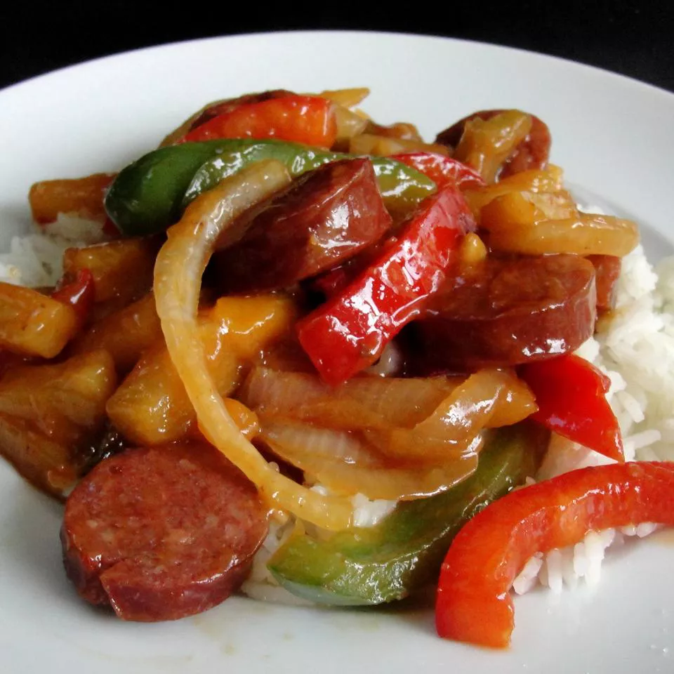

Hwaaiian-sausage-skillet

Description
I made this up one day when I couldn't find a recipe anywhere with
these ingredients. So i kind of threw it together on a whim. Sugar can
be adjusted for sweetness, and if the sauce gets a bit thicker than
desired i suggest adding a little chicken broth as it.s thickening.
Serve immediately over rice.
Ingrediants
- 1 tablespoon vegetable oil, or more to taste
- 1(16 ounce) package Polish sausage, or to tatse, cut into 1 inch
squares
- 1 large onion, thinly sliced
- 1 large green bell peppper, cut into 1-inch square
- 3/4 frsh pineapple-peeled, cored, and cut into chunks
- 2 tablespoons cornstarch
- 1/2 cup pineapple juice, or more to taste
- 1/3 cup packed brown sugar, or to taste
- 2 tablespoons cider vinegar
- 2 tablespoons soy sauce
- 2 tablespoon minced garlic
Steps
Heat oil in a large skillet over medium heat. Cook and stir
sausage, onion, and green bell pepper until vegetables start to
become tender, about 8 minutes;add pineapple and cook, strring
ocassionally, until the pineapple is hot, about 5 minutes more.
Beat pineapple juice and cornstarch together in a bowl using a whisk.
Stir brwon sugar, cider vinegar, soy sauce, and minced garlic with the
pineapple juice untill the sugar dissolves into the liquid; pour over
the sausage mixture and cook until the sauce thickens, 5 to 8 minutes.